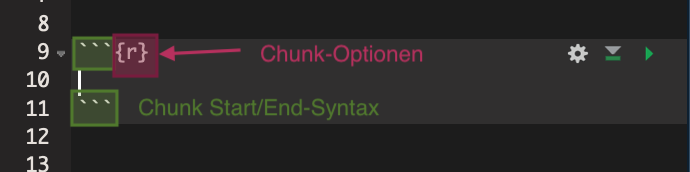

A Eine kurze Einführung in R Markdown
Hier gibt es eine kurze Einführung in R Markdown. Wir beschränken uns dabei auf die grundlegende Idee von Markdown, da die konkrete Syntax im Internet an zahlreichen Stellen wunderbar erläutert ist und man das konkrete Schreiben am besten in der Anwendung lernt.
A.1 Markdown vs. R-Markdown
Bei Markdown handelt es sich um eine sehr einfache Auszeichnungssprache, d.h. eine Programmiersprache, mit der schön formatierte Texte erstellt werden können und die gleichzeitig auch für Menschen sehr einfach lesbar ist. Dateien, die in Markdown geschrieben sind, sind gewöhnlicherweise an der Endung .md zu erkennen.
R-Markdown stellt man sich am besten als eine Kombination von Markdown und R vor: R-Markdown Dateien, die immer durch die Dateiendung .Rmd gekennzeichnet sind, bestehen sowohl aus Markdown-Code, als auch aus R-Code. Das bedeutet, dass man sein Forschungsprojekt gleichzeitig erklären und durchführen kann. Im Prinzip können ganze Forschungspapiere in R-Markdown verfasst werden und damit vollständig reproduzierbar gestaltet werden.
A.2 Installation von R-Markdown
Für den Fall, dass Sie mit R-Studio arbeiten brauchen Sie lediglich das Paket rmarkdown zu installieren:
install.packages('rmarkdown')Das Standardformat für R-Markdown Dokumente ist html. Wenn Sie aber auch PDF Dokumente erstellen wollen, müssen Sie auf Ihrem Computer LaTex installieren. Hierfür finden sich zahlreiche Anleitungen im Internet (z.B. hier oder hier).
A.3 Der R-Markdown Workflow
A.3.1 Ein neues R-Markdown Dokument erstellen
R-Studio macht es Ihnen sehr leicht R-Markdown Dokumente zu erstellen. Klicken Sie einfach auf den Button Neu und wählen dort dann R Markdown aus, wie auf folgendem Screenshot zu sehen ist:
Im folgenden Fenster können Sie getrost die Standardeinstellungen so wie vorgeschlagen belassen, da Sie alles später noch sehr leicht ändern können.
Sie sehen nun eine Datei, das bereits einigen Beispielcode enthält und damit schon einen Großteil der Syntax illustriert.
Ein R-Markdown Dokument besteht in der Regel aus zwei Teilen: dem Titelblock und dem darunter folgenden Dokumentenkörper:

A.3.2 Der Titelblock
Der Titelblock ist immer durch zwei Zeilen mit dem Inhalt “---” oben und unten abgegrenzt. Die Syntax des Titelblocks folgt der Sprache YAML, aber das hat wenig praktische Relevanz. Im Titelblock werden alle globalen Einstellungen für das Dokument vorgenommen. Für einfache Dokumente muss nur wenig an den Standardeinstellungen geändert werden, aber im Laufe der Zeit werden Sie merken, dass Sie über den YAML-Block Ihr Dokument zu ganz großen Teilen individualisieren können. In der Regel finden Sie alle Antworten durch Googlen, daher werde ich hier nicht weiter auf den Header eingehen.
A.3.3 Der Textkörper
Der Textkörper besteht aus normalem Text, welcher in der Markdown Syntax geschrieben ist, und so genannten Chunks. Für die wirklich einfache Syntax für normalen Text gibt es zahlreiche gute Anleitungen im Internet, z.B. dieses eingängige Cheat Sheet.
Innerhalb der Chunks können Sie Code in einer beliebigen Programmiersprache schreiben, insbesondere auch in R. Die Syntax unterscheidet sich dabei überhaupt nicht von einem normalen R Skript.
Um einen Chunk zu Ihrem Dokument hinzuzufügen klicken Sie oben rechts im Skripbereich auf ‘Insert’ und wählen R aus:

Daraufhin wird an der Stelle des Cursors ein Chunk in Ihr Dokument eingefügt. Dieser Chunk wird in der ersten und letzten Zeile durch ``` begrenzt. In der ersten Zeile wird zusätzlich innerhalb von geschweiften Klammern die Programmiersprache des Chunks definiert:

Darüber hinaus kann das Ausführverhalten für den Chunk durch weitere Argumente innerhalb der geschweiften Klammer weiter spezifiziert werden.
Häufig möchten Sie z.B., dass der Code im Chunk zwar im Dokument angezeigt, aber nicht ausgeführt werden soll. Dies können Sie durch die Option eval=FALSE erreichen. In diesem Fall sähe Ihr Chunk so aus:

In diesem Beispiel wird die Zuweisung x <- 4 bei der Kompillierung des Dokuments nicht ausgeführt.
Eine gute Übersicht über die Optionen, die Ihnen offen stehen, finden Sie hier oder durch Googlen.
Sie können einzelne Chunks auch schon vor dem Kompillieren des Dokuments ausführen indem Sie auf das Play-Zeichen oben links beim Chunk drücken. Damit erhalten Sie eine Vorschau auf das Ergebnis.
A.3.4 Kompillieren von Dokumenten
Der Prozess, der aus dem Quellcode ihres Dokuments (also allem was in der .Rmd Datei geschrieben ist) das fertige Dokument erstellt, wird Kompillieren genannt. Dabei wird aus dem .Rmd Dokument ein gut lesbares .html oder .pdf Dokument erstellt, wobei alle Chunks normal ausgeführt werden (es sei denn dies wird durch die Option eval=FALSE verhindert).
Grundsätzlich gibt es zwei Möglichkeiten ein Dokument zu kompillieren: über die entsprechende R-Funktion, oder über den Knit-Button in R-Studio.
Die klassische Variante verwendet die Funktion render() aus dem Paket rmarkdown. Die wichtigsten Argumente sind dabei die folgenden: input spezifiziert die zu kompillierende .Rmd-Datei, output_format das für den Output gewünschte Format14 und output_file den Pfad und den Namen der zu erstellenden Outputdatei.
Wenn Sie also das Dokument FirstMarkdown.Rmd kompillieren wollen und den Output unter Output/OurMarkdown.html als html-Datei speichern wollen, dann können Sie das mit folgendem Code, vorausgesetzt die Datei FirstMarkdown.Rmd liegt im Unterordner R:
render(input = "R/FirstMarkdown.Rmd",
output_format = "html",
output_file = "output/FirstMarkdown.html")Weitere Informationen zu den Parametern finden Sie wie immer über die help() Funktion. Alternativ können Sie auch den Button Knit in der R-Studio Oberfläche verwenden. Das ist in der Regel bequemer, lässt aber weniger Individualisierung zu.
A.4 Relative Pfade in Markdown-Dokumenten
Der problematischste Teil beim Arbeiten mit R-Markdown ist der Umgang mit relativen Pfaden. Um das Problem zu illustrieren nehmen wir einmal folgende Ordnerstruktur an, wobei der Ordner MarkdownProject unser Arbeitsverzeichnis ist:

Das Problem ist nun, dass wenn Sie eine R-Markdown Datei kompillieren, diese Datei alle Pfade nicht ausgehend von Ihrem Arbeitsverzeichnis interpretiert, sondern vom Speicherort der .Rmd-Datei. Das ist natürlich hochproblematisch, denn stellen Sie sich vor, Sie möchten in Ihrem R-Markdown-Skript die Datei data/BIP-Data.csv einlesen. Normalerweise würden Sie dafür den folgenden Code verwenden:
bip_data <- fread("data/BIP-Data.csv")Zwar würde der Code in einem R-Skript, z.B. in R/R-Skript.R perfekt funktionieren. In einem R-Markdown Dokument, das nicht im Arbeitsverzeichnis direkt gespeichert ist, jedoch nicht. Da in R-Markdown-Dokumenten alle Pfade relativ des Speicherorts des Dokuments interpretiert werden, müssten wir hier schreiben:15
bip_data <- fread("../data/BIP-Data.csv")Das wäre allerdings unschön, weil wir dann unterschiedlichen Codes in Skripten und in R-Markdown-Dokumenten verwenden müssten und das Ganze dadurch deutlich verwirrender werden würde.
Es wäre also schön, wenn R automatisch wüsste, was das Arbeitsverzeichnis des aktuellen Projekts ist und dieses automatisch berücksichtigt, unabhängig davon ob wir mit einem .R oder .Rmd Dokument arbeiten und wo dieses Dokument innerhalb unserer Projekt-Struktur gespeichert ist.
Zum Glück können wir genau das mit Hilfe des Pakets here erreichen.16 Das Paket enthält eine Funktion here() die als Argument einen Dateinamen oder einen relativen Pfad akzeptiert, und daraus einen absoluten Pfad auf dem Computer, auf dem der Code gerade ausgeführt wird, konstruiert.
Wir können also unseren Code von oben einfach folgendermaßen umschreiben:
bip_data <- fread(here("data/BIP-Data.csv"))In dieser Form funktioniert er sowohl in .R als auch .Rmd Dateien ohne Probleme.
Hinweis I: Die Funktion
here()verwendet verschiedene Heuristiken um das Arbeitsverzeichnis des aktuellen Projekt herauszufinden. Darunter fällt auch das Suchen nach einer.RprojDatei. Überhaupt funktionieren die Heuristiken in der Regel wunderbar und können für Ihren konkreten Fall über die Funktiondr_here()angezeigt werden. Um ganz sicherzugehen sollte man aber immer in das Arbeitsverzeichnis eine Datei.hereablegen. Diese kann manuell, oder über die Funktionset_here(), erstellt werden.
Hinweis II: Die Verwendung von
here()ist essenziell, wenn Ihre R-Markdown Dokumente auf mehreren Computern funktionieren sollen. Daher ist die Verwendung in den Arbeitsblättern verpflichtend.
A.5 Weitere Quellen
Eine gute Übersicht über die häufigsten Befehle enthält dieses Cheat Sheet. Eine sehr umfangreiche Einführung bietet das Online-Buch R Markdown: The Definitive Guide. Aber auch darüber hinaus finden sich im Internet zahlreiche Beispiele für die R-Markdown-Syntax. Dieses Skript wurde übrigens in R Bookdown, einer Erweiterung von R-Markdown für Bücher, geschrieben.
R-Markdown Dateien können in sehr viele verschiedene Formate kompilliert werden, das am häufigsten verwendete Format ist jedoch
html. Eine Übersicht finden Sie hier.↩Mit
../bewegt man sich bei einem relativen Pfad einen Ordner nach oben.↩Tatsächlich ist
heredermaßen praktisch, dass ich empfehle grundsätzlich alle Pfade in jedem Projekt - ob R-Markdown oder nicht - mit Hilfe vonhereanzugeben.↩